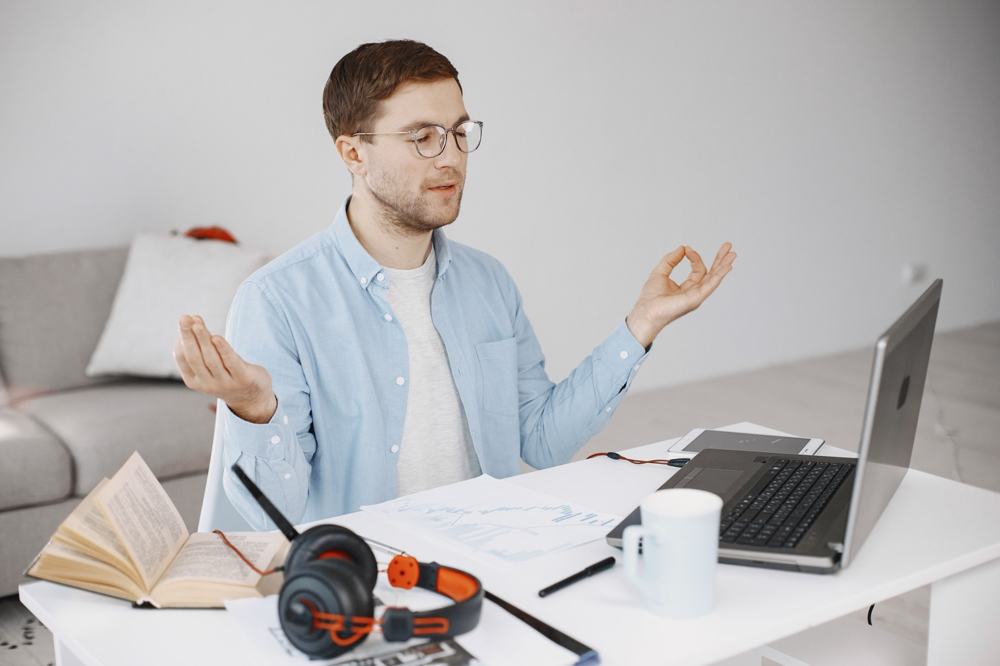

🤝
Социальное здоровье
Лучше всего подходит для сплочения команды, обучения и развития эмоционального интеллекта.
Подробнее →Помогаем компаниям сохранять ключевых сотрудников, снижать токсичность в командах и превращать заботу о благополучии в операционную устойчивость.
Более 20 мероприятий, посвященных вопросам психического и физического здоровья, стресса, осознанности и многому другому.
Снижаем выгорание, удерживаем сотрудников и повышаем устойчивость команды за 4 недели.
Для компаний, которые замечают признаки перегрузки, снижения вовлечённости, конфликтов, слабой адаптации новичков или эмоционального выгорания в команде.
Получить план антикризисной программыКлючевые специалисты работают на пределе и начинают искать новое место.
Команда делает задачи, но энергия, инициатива и интерес постепенно исчезают.
Коммуникация становится тяжелее, растёт раздражение и недоверие.
Новый сотрудник остаётся один на один с задачами, чатами и негласными правилами команды.
Выявляем риски выгорания, уровень стресса и точки напряжения.
Работаем со стрессом, тревогой, восстановлением энергии и коммуникацией.
Собираем реальные запросы команды без давления и риска для участников.
Помогаем лидерам поддерживать команду и управлять состоянием в кризисе.
Помогаем новым сотрудникам быстрее почувствовать опору, контакт и принадлежность к команде.
Вы защищаете не только сотрудников, но и результаты бизнеса.
IT-команды и продуктовые компании
Стартапы и быстро растущие команды
Полностью удалённые и распределённые команды
Команды от 10 до 500 сотрудников
Скрытые ментальные кризисы в штате ежедневно влияют на продуктивность, коммуникацию и удержание сотрудников.
Хронический стресс снижает вовлечённость, увеличивает ошибки и приводит к потере сильных сотрудников.
Тревога, усталость и напряжение мешают сотрудникам сохранять концентрацию и принимать точные решения.
Нарушенные коммуникации усиливают напряжение, пассивную агрессию и снижают качество командной работы.
Перестройки, слияния и новые процессы повышают тревожность и сопротивление внутри команд.
Лидеры тоже переживают перегрузку, что напрямую влияет на решения, атмосферу и темп команды.
Сотрудники теряют интерес к задачам, не видят смысла в работе и постепенно отдаляются от команды.
Комплексная модель благополучия: социальное, психическое, эмоциональное, финансовое и физическое здоровье.
Лучше всего подходит для сплочения команды, обучения и развития эмоционального интеллекта.
Подробнее →
Формируем спокойное отношение к деньгам и снижаем финансовую тревогу.
Подробнее →Лучше всего подходит для: напряженных сезонов, команд, испытывающих стресс, стресса у сотрудников, проблем с выгоранием, стресса у персонала, психического здоровья.
Идеально подходит для: слияний, поглощений, периодов организационных изменений.
Идеально подходит для: повышения уровня вашей команды, укрепления командного духа, проведения общих мероприятий.
Лучше всего подходит для: укрепления командных связей, снятия стресса, предотвращения выгорания, улучшения психического здоровья, снижения стресса у сотрудников, работы в стрессовых ситуациях, стресса у работников.
Лучше всего подходит для: снятия стресса, расслабления, полностью удаленных команд, психического здоровья, стресса у сотрудников, стресса в командах, стресса у работников.
Идеально подходит для: периодов организационных изменений, обучающих обедов, поддержания эмоционального благополучия.
Идеально подходит для: выражения признательности сотрудникам, укрепления командных связей, проведения специальных мероприятий, повышения эмоционального благополучия.
Лучше всего подходит для: снятия стресса, перемен, периодов неопределенности, эмоционального благополучия.
Идеально подходит для: налогового сезона, обучающих обедов, финансового благополучия.
Эта программа по финансовому благополучию призвана предоставить участникам инструменты для достижения успеха и знания, необходимые для принятия взвешенных финансовых решений в профессиональной и личной жизни. Темы программы посвящены выявлению финансовых убеждений и инвестиционных стратегий, которые помогут вам достичь максимально возможного финансового благополучия.
Лучше всего подходит для: напряженного периода, снятия стресса, выгорания, улучшения психического здоровья, упражнений за рабочим столом, офисных тренировок.
Идеально подходит для: напряженного сезона, поддержания здорового питания, обучающих обедов, питания на рабочем месте, корпоративного питания.
Лучше всего подходит для: снятия стресса, борьбы с хандрой в понедельник, поддержания физического здоровья, упражнений за рабочим столом, офисных тренировок.
Лучше всего подходит для: борьбы с выгоранием, снятия стресса, повышения командного духа, улучшения физического здоровья, снижения стресса на рабочем месте.
Идеально подходит для: сплочения команды, снятия стресса, обучающих обедов, поддержания физического здоровья, упражнений за рабочим столом, офисных тренировок.
Простой и понятный формат работы с HR и руководителями.
Определяем цели, проблемы и потребности команды.
Предлагаем решение и согласуем формат.
Психологи проводят сессию онлайн.
Собираем отклики участников и анализируем эффект.
Поддерживаем результат и усиливаем изменения.
Специалисты проекта работают с индивидуальными и групповыми форматами поддержки сотрудников.
Психолог, экзистенциальный терапевт
Психолог, игропрактик
Психолог, аналитический юнгианский психолог
Психолог, экзистенциальный психолог
Психолог, гештальт-терапевт и травматерапевт
Психолог, гештальт-подход
Психолог, гештальт-подход
Подбираем формат поддержки под задачи команды, уровень нагрузки и текущие вызовы бизнеса.
Подходит для решения конкретного запроса: выгорание, стресс, напряжение в коллективе, снижение мотивации или организационные изменения.
Регулярная поддержка сотрудников с постепенным улучшением атмосферы внутри команды.
Для команд, которые проходят через масштабирование, изменения или хотят выстроить устойчивую культуру благополучия сотрудников.
Примеры обратной связи после внедрения программ поддержки.
Сессия по профилактике выгорания помогла команде признать усталость и начать говорить о нагрузке открыто.
Марина ПетроваHR-директор
После программы по коммуникации стало проще обсуждать сложные темы без обвинений.
Алексей СмирновОперационный директор
Сотрудники стали спокойнее реагировать на стрессовые ситуации.
Екатерина ВолковаHR-менеджер
Финансовый вебинар помог снизить тревогу вокруг денег.
Дмитрий КузнецовФинансовый директор
Йога на стуле оказалась простой и рабочей практикой для офиса.
Ирина ЛебедеваРуководитель отдела
Поддержка психологов помогла сохранить ключевых сотрудников.
Николай ОрловCEO
Оставьте контакты. Мы свяжемся с вами и предложим формат программы под задачи вашей команды.
☎ + 7 996 3362868
Социальное здоровье
Лучше всего подходит для: сплочения команды, обучения и расширения возможностей, развития эмоционального интеллекта.
Эта программа по укреплению социального благополучия сотрудников — мощный виртуальный опыт, который помогает создать сплоченную корпоративную культуру, вдохновляя на содержательные беседы. Команда узнает друг друга на более личном уровне, одновременно учась вести более эффективные беседы, повышая свои коммуникативные навыки и формируя прочные, подлинные отношения, в которых люди чувствуют, что их видят, слышат и ценят. Таким образом, это отчасти обучение, отчасти интерактивное сплочение команды. Это 90-минутная программа по укреплению социального благополучия.